COACH COPY · answers enabled · do not share the link
🚀 Session 2 · Wed, Oct 21, 2026
Team brain teasers, then a 10-problem practice set
🧩 Team brain teasers (20 min)
Work on all three together as one team. Split up the work, compare answers, and make sure everyone on the team can explain why the answer is right.
1The chicken nugget problem
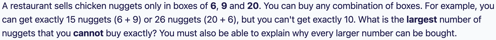
Answer: 43
Show that 43 can't be bought. Boxes of 6 and 9 are both multiples of 3, so with no 20-boxes you can only reach multiples of 3. 43 is not one.
With one 20-box, the rest (43 − 20 = 23) must come from 6s and 9s, so it must be a multiple of 3. 23 is not.
With two 20-boxes, the rest is 43 − 40 = 3. You can't make 3 from 6s and 9s. Three 20-boxes is 60, which is too many. So 43 is impossible.
Show that everything above 43 works. Find 6 numbers in a row that can be bought:
44 = 20 + 6 + 6 + 6 + 6
45 = 9 × 5
46 = 20 + 20 + 6
47 = 20 + 9 + 9 + 9
48 = 6 × 8
49 = 20 + 20 + 9
Now you can add a 6-box to any of these to get the number 6 higher. Starting from 44 to 49, adding 6s reaches 50 to 55, then 56 to 61, and so on, so every number from 44 up can be bought.
The largest number you can't buy is 43. (A computer search agrees.)
2The circle of 100
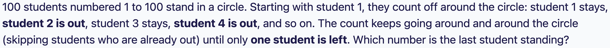
Answer: 73
Try small circles first and see who survives. With 1 student: 1. With 2: 1. With 3: 3. With 4: 1. With 5: 3. With 6: 5. With 7: 7. With 8: 1. With 9: 3.
Spot the pattern. When the number of students is a power of 2 (1, 2, 4, 8, ...), student 1 survives. After that the survivor goes up by 2 each time (1, 3, 5, 7, then back to 1 at the next power of 2).
Why a power of 2 gives student 1. In one trip around the circle, all the even numbers go out and exactly half the students are left. Student 1 stays and the next trip starts from student 1 again, with half as many students. This repeats, so 1 always survives.
Now use it for 100. The biggest power of 2 below 100 is 64. We have 100 − 64 = 36 extra students. Eliminate exactly 36 students first: that removes 2, 4, 6, ..., 72.
Now 64 students remain (a power of 2) and the next student in the count is 73. That student is now "first" in a circle of 64, so student 73 survives.
As a formula: 100 = 64 + 36, and the survivor is 2 × 36 + 1 = 73. (A computer simulation agrees.)
3The 12 coins
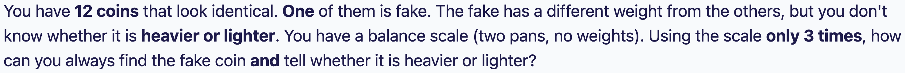
Answer: yes, it can always be done in 3 weighings. Here is one method.
Number the coins 1 to 12. Weighing 1: coins 1, 2, 3, 4 on the left and 5, 6, 7, 8 on the right. There are 3 outcomes.
If it balances: the fake is one of 9, 10, 11, 12, and coins 1 to 8 are all real. Weighing 2: put 9, 10, 11 on the left and three real coins (1, 2, 3) on the right.
• If it balances, the fake is 12. Weighing 3: weigh 12 against a real coin. Heavier means 12 is heavy, lighter means 12 is light.
• If the left side (9, 10, 11) is heavier, the fake is one of those and it is heavy. Weighing 3: weigh 9 against 10. The heavier one is the fake. If they balance, it is 11.
• If the left side is lighter, the fake is one of 9, 10, 11 and it is light. Weigh 9 against 10. The lighter one is the fake, and if they balance it is 11.
If the left side (1, 2, 3, 4) is heavier in weighing 1: then either one of 1 to 4 is a heavy fake, or one of 5 to 8 is a light fake. Coins 9 to 12 are real. Weighing 2: put 1, 2, 5 on the left and 3, 6, 9 on the right (9 is real).
• If the left is heavier: the fake is 1 (heavy), 2 (heavy) or 6 (light). Weighing 3: weigh 1 against 2. The heavier one is the fake. If they balance, 6 is the light fake.
• If the left is lighter: the fake is 5 (light) or 3 (heavy). Weighing 3: weigh 5 against a real coin. If 5 is lighter, 5 is the fake. If they balance, 3 is the heavy fake.
• If it balances: the fake is 4 (heavy), 7 (light) or 8 (light). Weighing 3: weigh 7 against 8. The lighter one is the fake. If they balance, 4 is the heavy fake.
If the left side (1, 2, 3, 4) is lighter in weighing 1: do the exact mirror image of the step above. Swap the roles of coins 1 to 4 and coins 5 to 8, so you use 5, 6, 1 against 7, 2, 9, and so on.
Why it works: there are 24 possibilities (12 coins, each heavy or light), and 3 weighings give 3 × 3 × 3 = 27 outcomes, so there is just enough room. The key idea is to use known-real coins as a reference in the later weighings. (Testing this method on all 24 cases by computer finds the fake and its weight every time.)
📝 Practice set (30 min)
10 problems, easy to hard. The last 2 are hard. Show your work, and skip and come back if you're stuck for more than 3 minutes.
30:00
1Fractions / patterns
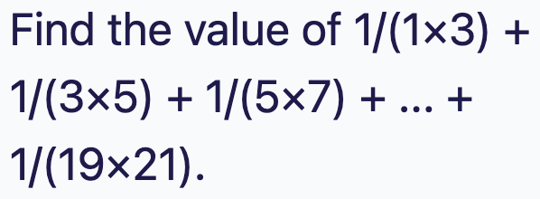
Answer: 10/21
Each term has the form 1/(k(k+2)) with k = 1, 3, 5, ..., 19. That is 10 terms.
Split each term: 1/(k(k+2)) = ½ × (1/k − 1/(k+2)). Test it on the first term: ½ × (1 − 1/3) = 1/3 = 1/(1×3). ✓
Write out the sum: ½ × [(1 − 1/3) + (1/3 − 1/5) + (1/5 − 1/7) + ... + (1/19 − 1/21)].
Everything in the middle cancels (telescoping), leaving ½ × (1 − 1/21).
½ × 20/21 = 10/21.
2Arithmetic / sequences
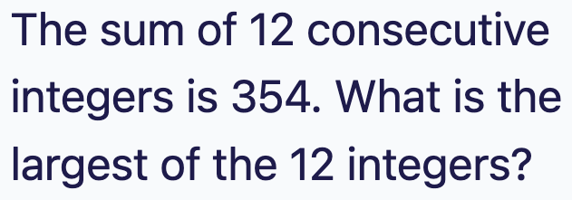
Answer: 35
The average of the 12 numbers is 354 ÷ 12 = 29.5.
With an even number of consecutive integers there is no single middle number. The middle two are 29 and 30 (their average is 29.5).
There are 6 numbers on each side of the middle: 24, 25, ..., 29 and then 30, 31, ..., 35.
Check: pair up the ends. 24 + 35 = 59, and there are 6 such pairs, so 6 × 59 = 354. ✓
The largest is 35.
3Mixtures / percent
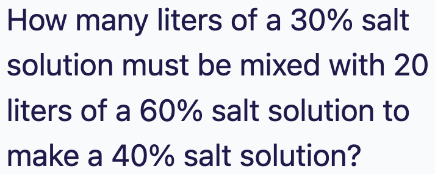
Answer: 40 liters
Let x be the liters of 30% solution. The salt from it is 0.30x. The salt from the 20 liters of 60% solution is 0.60 × 20 = 12.
The total mixture is x + 20 liters and it should be 40% salt, so it holds 0.40(x + 20) = 0.40x + 8 liters of salt.
Salt in = salt out: 0.30x + 12 = 0.40x + 8.
Subtract: 4 = 0.10x, so x = 40.
Check: 40 L at 30% gives 12 L of salt. Add 12 L from the other solution for 24 L of salt in 60 L total, and 24 ÷ 60 = 40%. ✓
Shortcut: 40% is 10 points above 30% and 20 points below 60%. The mix is closer to the 30%, so you need twice as much of it: 2 × 20 = 40.
4Rates
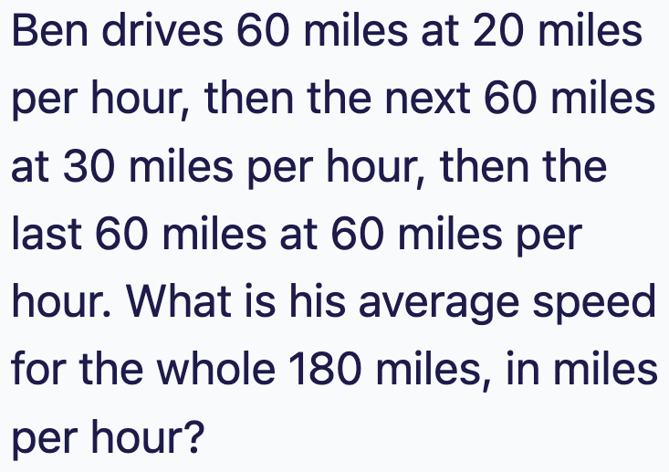
Answer: 30 mph
Careful: the answer is not (20 + 30 + 60) ÷ 3, which is about 36.7. He spends more time at the slow speeds.
Average speed = total distance ÷ total time.
Time for each leg: 60 ÷ 20 = 3 hours, 60 ÷ 30 = 2 hours, 60 ÷ 60 = 1 hour.
Total time = 3 + 2 + 1 = 6 hours. Total distance = 180 miles.
180 ÷ 6 = 30 mph.
5Counting
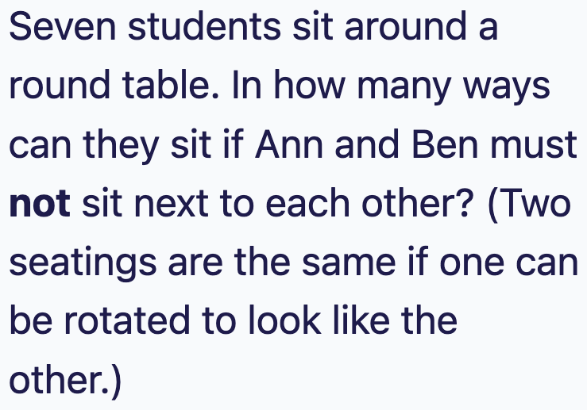
Answer: 480
Around a round table, rotations don't count as different. So fix one student in a seat to remove rotations, then arrange the other 6: 6! = 720 ways in total.
Now count the bad seatings, where Ann and Ben ARE next to each other. Glue them into one block. Now there are 6 things around the table: 5! = 120 ways.
Inside the block Ann and Ben can swap (AB or BA), so multiply by 2: 120 × 2 = 240.
Not next to each other = 720 − 240 = 480.
6Geometry
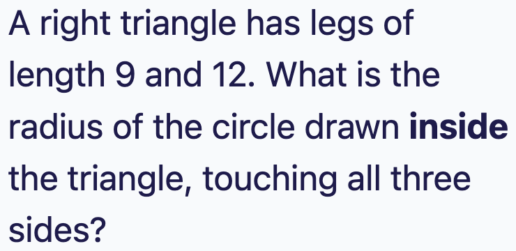
Answer: 3
The hypotenuse is 15, since 9² + 12² = 81 + 144 = 225 = 15². (It is the 3-4-5 triangle times 3.)
Area = ½ × 9 × 12 = 54.
Draw lines from the center of the inside circle to the three vertices. This cuts the triangle into three smaller triangles. Each has height r (the radius) and the sides 9, 12 and 15 as bases.
So the area is also ½ × r × (9 + 12 + 15) = ½ × r × 36 = 18r.
Set equal: 18r = 54, so r = 3.
Shortcut for right triangles: r = (leg + leg − hypotenuse) ÷ 2 = (9 + 12 − 15) ÷ 2 = 3. ✓
7Counting
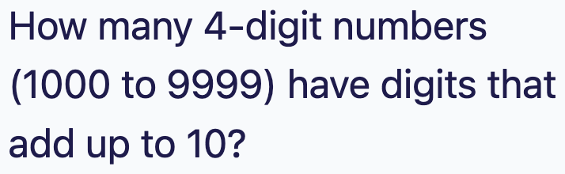
Answer: 219
Do casework on the first digit A (it can be 1 to 9). The other three digits (each 0 to 9) must add up to 10 − A.
The number of ways three digits can add to m is C(m+2, 2). Test it: m = 1 can be (1,0,0), (0,1,0), (0,0,1), which is 3 ways, and C(3,2) = 3. ✓
A = 1: m = 9 gives 55. A = 2: m = 8 gives 45. A = 3: 36. A = 4: 28. A = 5: 21. A = 6: 15. A = 7: 10. A = 8: 6. A = 9: 3.
No digit ever has to be more than 9, because m is at most 9, so there are no extra cases to remove.
If n = pa × qb × rc ..., the number of divisors is (a+1)(b+1)(c+1)...
We need that product to be 18. The ways to split 18: 18, 9×2, 6×3, 3×3×2. So the exponent patterns are (17), (8,1), (5,2) and (2,2,1).
For the smallest number, use the smallest primes and put the biggest exponents on the smallest primes:
(17): 217 = 131072
(8,1): 28 × 3 = 768
(5,2): 25 × 32 = 288
(2,2,1): 22 × 32 × 5 = 180
The smallest is 180. Check: 180 = 22 × 32 × 5 has (2+1)(2+1)(1+1) = 18 divisors. ✓
9Number theory (hard)
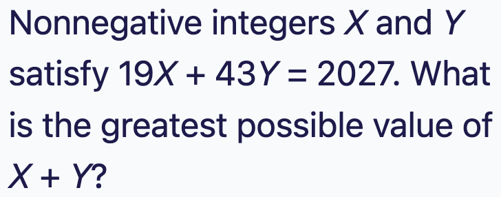
Answer: 89
2027 − 43Y must be divisible by 19. Work mod 19: 2027 = 19 × 106 + 13, so 2027 ≡ 13. Also 43 = 2 × 19 + 5, so 43 ≡ 5.
We need 5Y ≡ 13 (mod 19). Since 5 × 4 = 20 ≡ 1, the number 4 undoes the 5. Multiply both sides by 4: Y ≡ 52 ≡ 14 (mod 19).
So Y = 14, 33, 52, ... But 43 × 52 = 2236 is already more than 2027, so only Y = 14 and Y = 33 are possible.
Y = 14: X = (2027 − 602) ÷ 19 = 1425 ÷ 19 = 75, so X + Y = 89.
Y = 33: X = (2027 − 1419) ÷ 19 = 608 ÷ 19 = 32, so X + Y = 65.
Check: 19 × 75 + 43 × 14 = 1425 + 602 = 2027. ✓ The greatest is 89.
10Counting (hard)
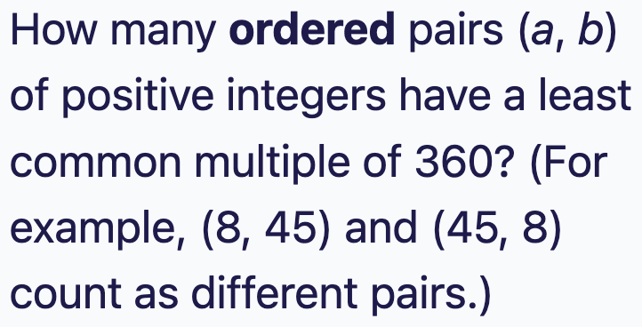
Answer: 105
Prime factor: 360 = 23 × 32 × 5.
The LCM takes the larger exponent of each prime. So for each prime, at least one of a and b must have the full exponent from 360.
Prime 2 (exponent 3): each number has an exponent from 0 to 3, so 4 × 4 = 16 combinations. Remove those where neither reaches 3 (both use 0 to 2: 3 × 3 = 9). That leaves 16 − 9 = 7.
Prime 3 (exponent 2): 3 × 3 = 9 combinations, minus 2 × 2 = 4 where neither reaches 2. That leaves 5.
Prime 5 (exponent 1): 2 × 2 = 4 combinations, minus 1 where neither has a 5. That leaves 3.
The primes don't affect each other, so multiply: 7 × 5 × 3 = 105.